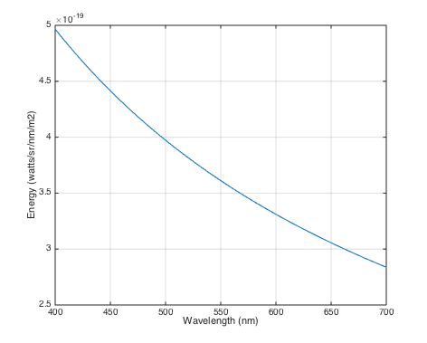
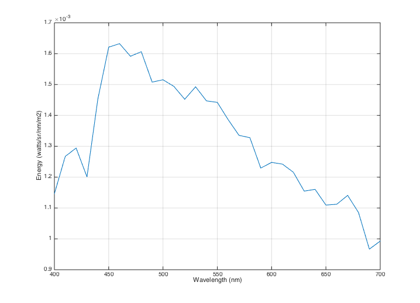
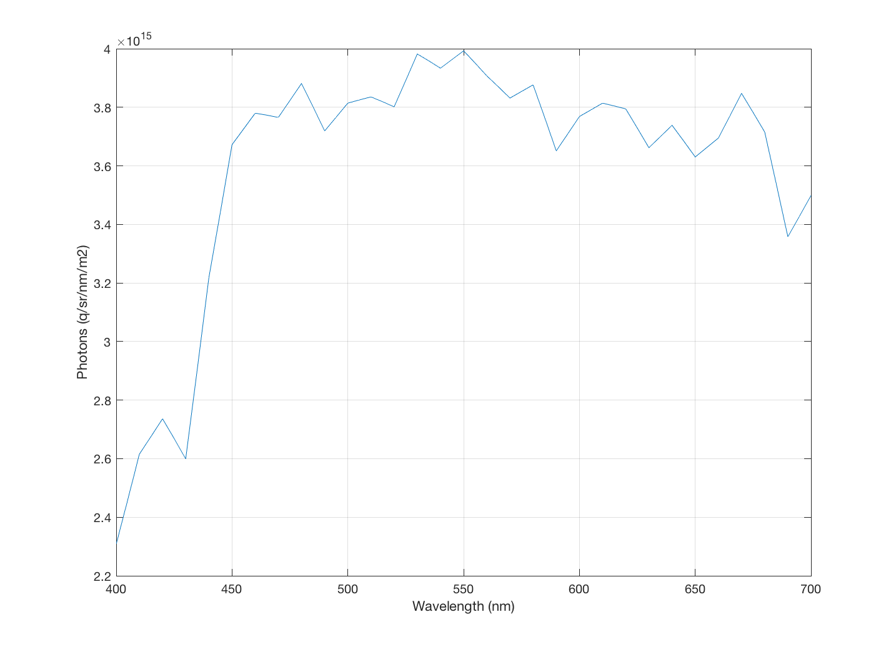
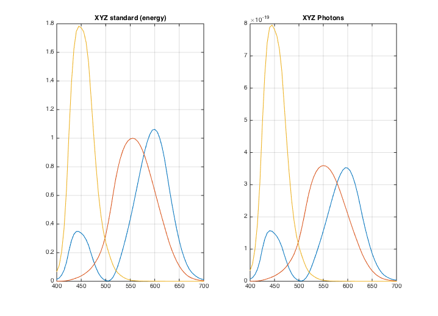
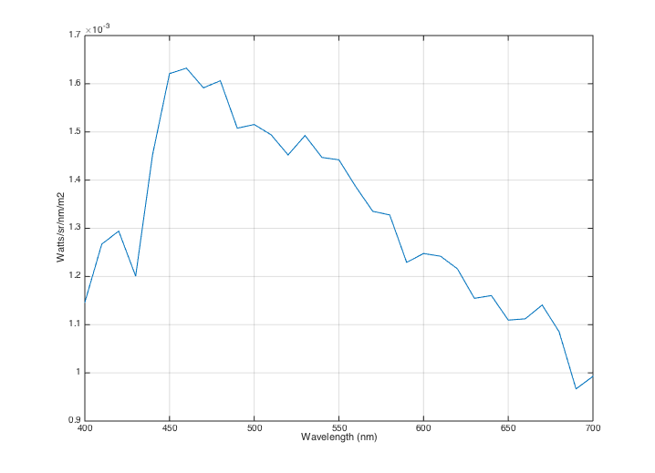
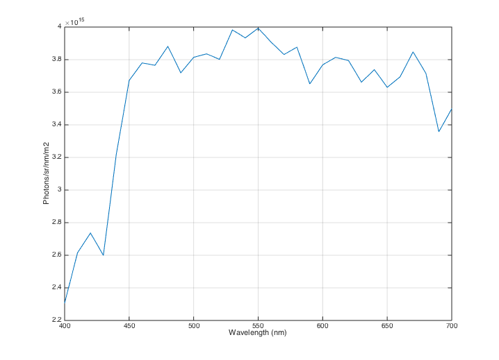

t_EnergyQuanta
Planck's relation and the units - explain the relationship between units of energy and units of quanta.
These differences matter for calculations involving the CIE functions and human cone quantum absorptions.
References: http://en.wikipedia.org/wiki/Planck%27s_relation
Copyright ImagEval Consultants, LLC, 2012.
Contents
The photons and energy are connected by Planck's Relation
See: http://en.wikipedia.org/wiki/Planck%27s_relation
photons = (energy/(h*c)) .* wavelength); energy = (h*c) * photons ./ wavelength;
The term h is Planck's constant and c is the speed of light.
ISET stores these constants so you can find them: vcConstants('plancks constant') vcConstants('speed of light')
% We can calculate the energy for quanta at different wavelengths by % setting up a vector of 1s to represent the photons and then calling % function Quanta2Energy wave = 400:5:700; photons = ones(length(wave),1); E = Quanta2Energy(wave,photons); % Notice that the amount of energy per photon declines with longer % wavelengths. vcNewGraphWin; plot(wave,E); grid on xlabel('Wavelength (nm)');ylabel('Energy (watts/sr/nm/m2)')
The spectral power distribution (SPD) in energy and quanta
This is a standard Daylight 6500 light source. We read it and set its luminance to 100 cd/m2.
d65Energy = ieReadSpectra('D65',wave); d65XYZ = ieXYZFromEnergy(d65Energy(:)',wave); d65Energy = d65Energy*100/d65XYZ(2); % Have a look at the SPD and note the energy levels vcNewGraphWin; plot(wave,d65Energy); grid on xlabel('Wavelength (nm)');ylabel('Energy (watts/sr/nm/m2)') % Next, convert the light from energy units to photons. d65Photons = Energy2Quanta(wave(:),d65Energy(:)); % Look at the number of photons emitted from the source per square meter % and per steradian. Notice that the overall shape of the curves differ, % with the fall off at longer wavelengths is more rapid for energy than for % photons. That is, the D65 light has about the same number of long % (650nm) and middle (550nm) wavelength photons. But there is more energy % in the middle wavelength photons. vcNewGraphWin; plot(wave,d65Photons); grid on xlabel('Wavelength (nm)'); ylabel('Photons (q/sr/nm/m2)') 
t_EnergyQuanta - Energy, Photons, and the CIE XYZ functions
The CIE 1931 standard curves for XYZ are defined assuming that the input signal is specified in terms of energy.
XYZEnergy = ieReadSpectra('XYZ',wave); vcNewGraphWin; subplot(1,2,1), plot(wave,XYZEnergy); grid on; title('XYZ standard (energy)'); % For good reasons, the ISET sensor calculations are based on a % representation of the input signal in photons. If you wish to use an XYZ % filter on a sensor and want the output voltage to measure the XYZ value % of a light, then the filter used by the sensor should expect the input % signal to be defined in photons, not energy. You can see how to adjust % the filter by examining the ISET script, XYZQuanta.m. % type XYZQuanta.m XYZPhotons = ieReadSpectra('XYZQuanta',wave); subplot(1,2,2), plot(wave,XYZPhotons); grid on; title('XYZ Photons')
Calculating XYZ for a D65 light
We read a standard light (Daylight 6500 K) and scale it to have a luminance of 100 cd/m2.
d65Energy = ieReadSpectra('D65',wave); d65XYZ = ieXYZFromEnergy(d65Energy(:)',wave); d65Energy = d65Energy*100/d65XYZ(2); % Have a look at the SPD and note the energy levels vcNewGraphWin; plot(wave,d65Energy); grid on xlabel('Wavelength (nm)');ylabel('Watts/sr/nm/m2') % Next, convert the light from energy units to photons. d65Photons = Energy2Quanta(wave(:),d65Energy(:)); vcNewGraphWin; plot(wave,d65Photons); grid on xlabel('Wavelength (nm)');ylabel('Photons/sr/nm/m2') % The proper filters will be used when you calculate XYZ with the proper % functions, such as: d65XYZ = ieXYZFromPhotons(d65Photons(:)',wave) d65XYZ = ieXYZFromEnergy(d65Energy(:)',wave)
d65XYZ = 94.9402 100.0000 108.6629 d65XYZ = 94.9402 100.0000 108.6629 
CIE Luminance (Y)
For those of you interested, the relationship between the XYZ curves and the luminance level (Y) is a simple relationship:
The 683 value is a constant used by the CIE having to do with certain material standards. The two formula return the same values.
We take the size of the wavelength step into account in computing the summation approximation to the integral over wavelength, since the isetbio convention is to specify power on a per nm basis. If you're used to using PTB, this convention differs from PTB's. PTB specifies spectral power distributions on a power per wavelength sample basis.
dnm = wave(2)-wave(1); % Wavelength step
d65XYZ = dnm*683*XYZPhotons'*d65Photons(:)
d65XYZ = dnm*683*XYZEnergy'*d65Energy(:)
d65XYZ = 94.9402 100.0000 108.6629 d65XYZ = 94.9402 100.0000 108.6629